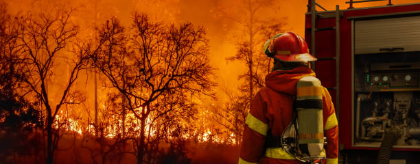
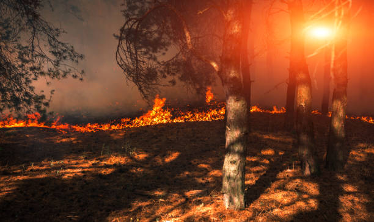
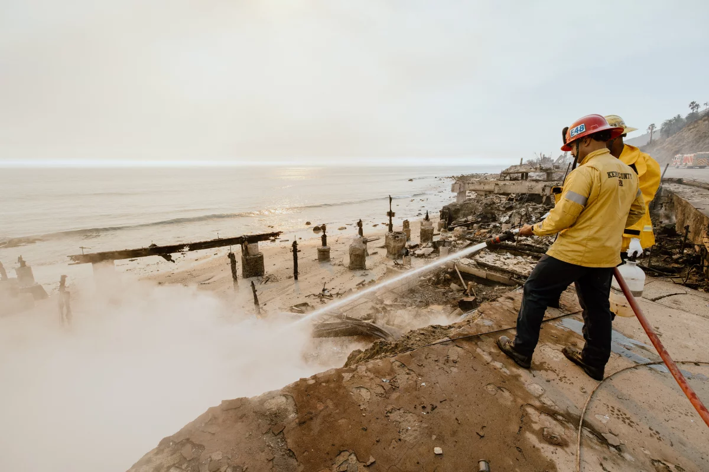
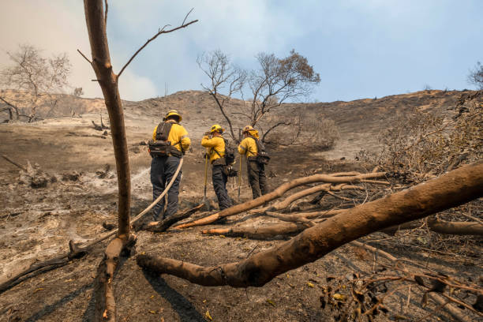

The Destruction Caused by Wildfires
Understanding the Devastation and Impact of Wildfires
Human Impact
California's wildfires cause severe damage to the state's ecosystems. Each year, millions of acres of forests, grasslands, and habitats are burned, disrupting wildlife and plant species. Some of the key environmental effects include:
- Loss of Biodiversity
Wildfires destroy the habitats of countless species, leading to the displacement or death of animals and plants. Species like the California spotted owl and the western pond turtle are especially vulnerable
- Air and Water Quality Degradation
Wildfires release harmful pollutants like carbon monoxide, particulate matter, and greenhouse gases into the air, causing poor air quality. Smoke from wildfires can travel over long distances, affecting cities far from the fire's location. The fires also contaminate water sources, as ash and debris flow into rivers and streams.
- Soil Erosion and Landslides
The removal of vegetation during fires makes the soil more prone to erosion. Without plant roots to hold the soil in place, heavy rains can trigger landslides and further damage the landscape.
- Climate Change
The fires themselves are a significant source of carbon emissions, which contribute to global warming. As the climate warms, conditions in California become more favorable for wildfires, creating a vicious cycle of increasing fire risk.
Economic Impact
Wildfires in California cause significant economic losses, affecting everything from property to agriculture.
- Property Damage
Wildfires often destroy homes, businesses, and critical infrastructure. Rebuilding efforts are costly, and many people face long-term displacement and financial hardship. In 2020 alone, the wildfires caused more than $10 billion in damages.
- Agricultural Losses
California is a major agricultural producer, and wildfires can decimate crops, kill livestock, and damage farmland. In addition to direct losses, the smoke can affect the quality of produce, like grapes, leading to reduced market value.
- Tourism
Wildfires can deter tourists from visiting California, especially in areas popular for outdoor activities like hiking, camping, and national parks. The smoke and damage to landscapes can make these areas less appealing.
- Costs of Firefighting and Recovery
The costs of battling wildfires are enormous. With resources spread thin, local and state governments must invest heavily in firefighting efforts, which diverts funds from other critical public services.
Social Impact
The social effects of California’s wildfires are far-reaching, impacting communities, health, and daily life.
- Displacement of Residents
Thousands of people are forced to evacuate their homes every year due to the threat of wildfires. Many lose their homes entirely, while others face months or even years of uncertainty as they wait for their communities to recover.
- Health Problems
The smoke from wildfires is a serious public health concern. It can cause respiratory problems, especially for vulnerable populations such as children, the elderly, and those with pre-existing conditions like asthma. Wildfires can also lead to long-term mental health issues, including stress, anxiety, and PTSD.
- Community Resilience and Recovery
Communities hit by wildfires often have to rebuild not only homes and infrastructure but also their sense of community. Recovery efforts take years, with many individuals and families experiencing financial hardship, displacement, and emotional distress.
- Indigenous and Rural Communities
Native American tribes and rural communities in fire-prone areas often bear a disproportionate burden of wildfires. These communities face the loss of traditional lands, cultural heritage sites, and are often under-resourced when it comes to wildfire prevention and recovery.
Volunteer Activities and Community Support
Volunteer efforts play a crucial role in supporting wildfire response and recovery. From immediate firefighting support to long-term rebuilding, volunteers are essential for helping communities rebuild and recover.
- Firefighting and Emergency Response
Many organizations rely on volunteers to assist with firefighting efforts, including controlled burns and evacuation assistance. Local fire departments often call on volunteers when large-scale fires require additional support.
- Disaster Relief Services
After wildfires, organizations such as the American Red Cross and local community groups mobilize to provide shelter, food, and medical care to displaced families. Volunteers help distribute supplies, provide first aid, and assist with shelter management.
- Recovery and Rebuilding
Volunteers are instrumental in the long-term recovery process, helping rebuild homes, clear debris, and restore infrastructure. Programs like Habitat for Humanity work with volunteers to rebuild homes for those who have lost everything.
- Environmental Restoration
Many volunteers participate in reforestation and habitat restoration efforts to help recover ecosystems destroyed by wildfires. Groups organize tree planting and soil stabilization projects to prevent erosion and rebuild wildlife habitats.
- Mental Health Support
Volunteers also provide emotional support to those affected by the fires, offering counseling and companionship to help individuals cope with the trauma of displacement, loss, and rebuilding.